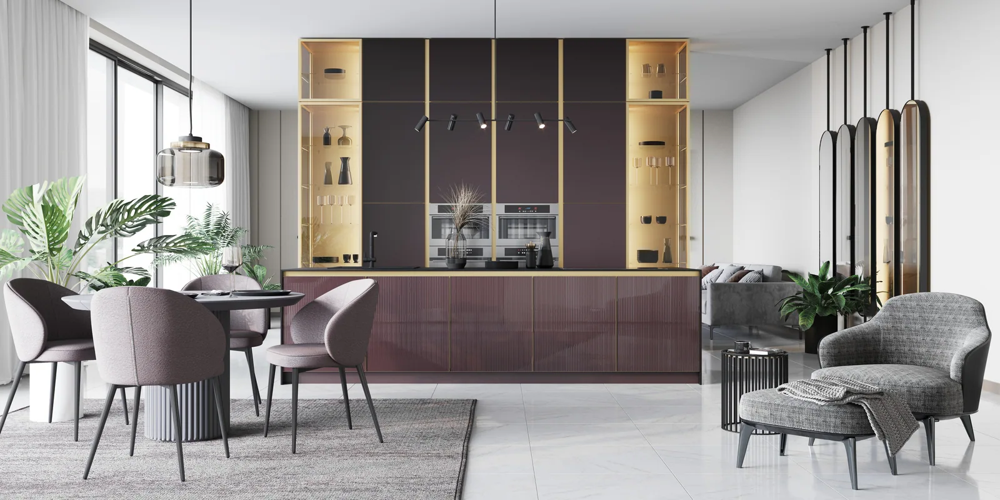
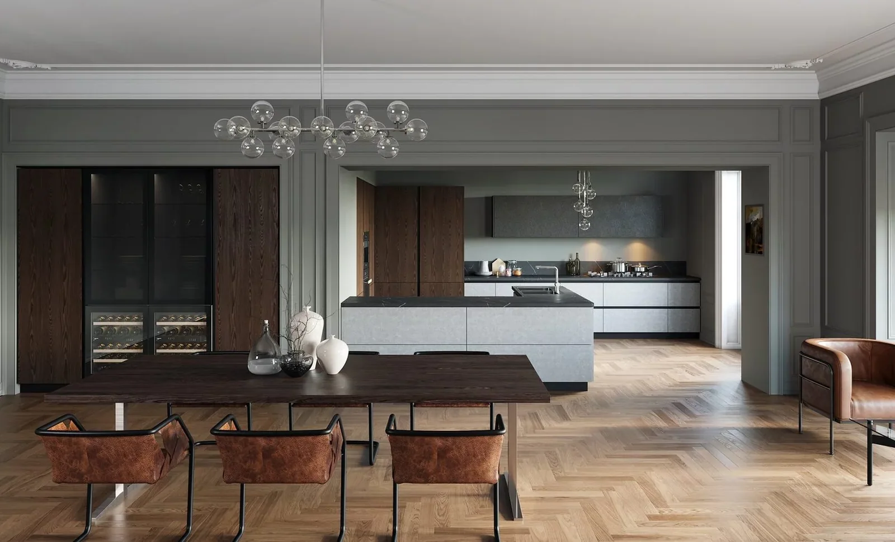
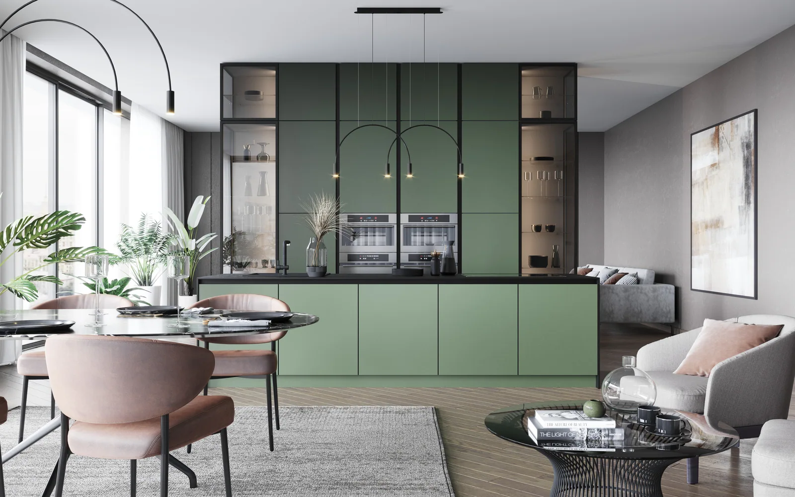

Глубокий цвет привлекает ещё на небольшом образце. Бордовый кажется бархатистым, шоколадный — тёплым, оливковый — спокойным и естественным. Но между понравившимся оттенком и целой кухней есть важный шаг: нужно понять, сколько места этот цвет займёт и что будет находиться рядом.
Один и тот же тон может стать деликатным акцентом, выразительным фоном или слишком тяжёлой поверхностью. Разницу определяют свет, масштаб и окружение.
Поэтому начинать стоит с роли цвета в интерьере.
Что стоит за интересом к глубокой палитре
В обзоре Milan Design Week 2026 компания Johnson Tiles отмечает тёплые коричневые, приглушённые зелёные и глубокие бордовые оттенки. Они встречаются рядом с мягкими нейтральными цветами, деревом и выразительными поверхностями.
Эта палитра позволяет сохранить сдержанность, добавив интерьеру больше характера. При этом выбирать все три оттенка для одной комнаты необязательно. Гораздо интереснее найти тот, который подходит конкретному пространству, и раскрыть его через материалы.
Универсального «правильного бордового» или «идеального оливкового» не существует. Различия внутри каждого цвета могут быть существенными: от тёплого и приглушённого до холодного и насыщенного.
Бордовый: от небольшой детали до главного акцента
Бордовый хорошо показывает, насколько важна площадь цвета. Обивка нескольких стульев и ряд высоких кухонных фасадов создают разное впечатление, даже если оттенок близок.
Если хочется сначала познакомиться с цветом, его можно рассмотреть в предметах, которые легко заменить: текстиле, кресле, небольшом светильнике. Для постоянной отделки полезно оценить более крупный образец и увидеть его рядом с будущей столешницей и полом.
Один из возможных вариантов — бордовые нижние секции на фоне спокойной стены и светлой рабочей поверхности. Другой — отдельная высокая композиция, которая воспринимается как мебельный акцент в кухне-гостиной.
В обоих случаях важно проверить, остаётся ли у цвета достаточно спокойного окружения. Дополнительные активные рисунки могут изменить впечатление сильнее, чем кажется на этапе выбора образцов.

Шоколадный: значение имеет подтон
Коричневый способен связать древесную мебель, камень и текстиль. Но название «шоколадный» скрывает множество разных оттенков.
У одного заметна красноватая основа, другой уходит в серый, третий кажется почти чёрным. Если выбирать материалы по отдельности, эти различия обнаружатся уже после установки.
Шоколадные оттенки можно вводить и через однотонные фасады, и через глубокий коричневый цвет древесной отделки. На каталожном изображении «Ниццы NEW» РИМИ показан второй подход: тёмные древесные поверхности кухни и столовой поддерживают друг друга. Это пример работы с цветом дерева, а не образец шоколадной эмали. В своём проекте коричневую отделку стоит рассматривать рядом с полом и другими деревянными поверхностями, проверяя их подтоны.
Стоит обратить внимание и на отделку. Матовая и глянцевая поверхность одного цвета по-разному отражают комнату и свет. Для большой кухни это может заметно изменить общий образ.

Оливковый: спокойствие без однообразия
Оливковый удобно обсуждать рядом с древесными оттенками, светлыми минеральными поверхностями и тёплыми нейтральными цветами.
Но и здесь важно смотреть на конкретный образец. Желтоватый зелёный и серо-зелёный могут по-разному сочетаться с выбранным камнем. Подсветка тоже способна изменить восприятие: приятная днём поверхность вечером иногда выглядит иначе.
В кухне-гостиной оливковый может занимать основную мебельную композицию, а дальше поддерживаться несколькими деталями. Повторять его в шторах, диване, ковре и декоре одновременно необязательно.
Часто для связи зон достаточно одного продуманного повторения.

Цвету нужна проверка в комнате
Фотография помогает выбрать направление, но не заменяет образец. На изображение влияют освещение съёмки, обработка и экран устройства.
Перед согласованием фасадов полезно поставить образец вертикально и посмотреть на него там, где будет кухня. Рядом расположить столешницу и материал пола. Затем повторить проверку вечером с предполагаемым освещением.
Особенно важно увидеть тёмный оттенок с основных точек обзора. Как он выглядит от входа? Что происходит с композицией, если смотреть со стороны дивана? Не становится ли вся мебель одним тяжёлым объёмом?
Ответ может подсказать изменение: оставить цвет на нижних секциях, разбавить высокую композицию или выбрать менее насыщенный тон.
Как сохранить актуальность надолго
Тренд помогает заметить оттенок, который раньше не рассматривали. Но окончательное решение лучше связывать со своими предпочтениями и архитектурой помещения.
Если глубокие цвета давно нравятся в одежде, искусстве или предметах, к ним стоит присмотреться и в интерьере. Если интерес появился только после одной эффектной фотографии, полезно дать себе время и сравнить несколько вариантов.
В «Марли Лимарт» подбор можно начать с двух цветовых композиций на одной планировке. Сохранить одинаковые материалы и освещение, меняя только оттенок фасадов. Так будет проще понять, какой характер кухни вам ближе.
Глубокий цвет раскрывается, когда у него есть понятная роль. Тогда бордовый, шоколадный или оливковый становится частью вашего дома, а не просто напоминанием о модной палитре сезона.
Вернуться в блог